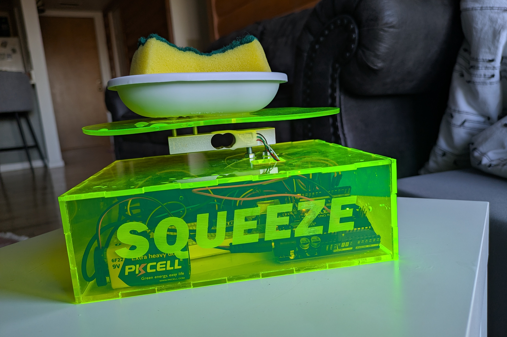
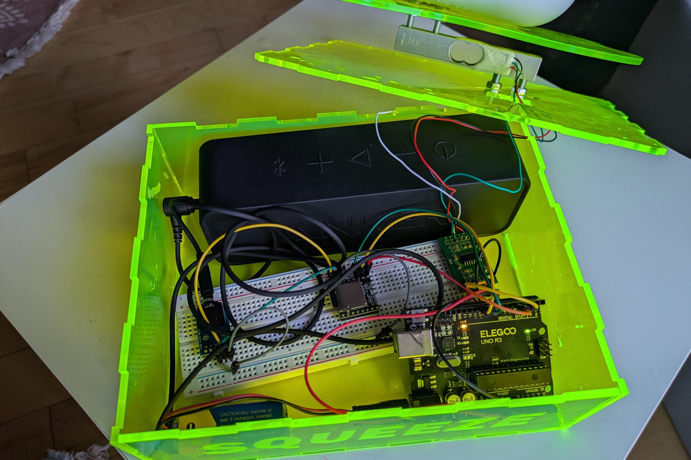

<> Screamin' Sponge Tray </>

One of my BIGGEST pet peeves is when people don’t squeeze out their damp sponges when doing dishes. I truly cannot fathom what stops people from doing this simple action to prevent noxious mildew smells, as well as the deeply unpleasant experience of picking up a cold, wet sponge when you don’t expect it.
Since I generally try to avoid conflict, I built this gadget to give people attitude for me.
If you don’t squeeze out your sponge before setting it on this sponge tray, it shouts something disparaging and maybe a bit demeaning at you, to remind you that you need to be better. But if you squeeze it out, it stays silent. Cause and effect, very simple.
